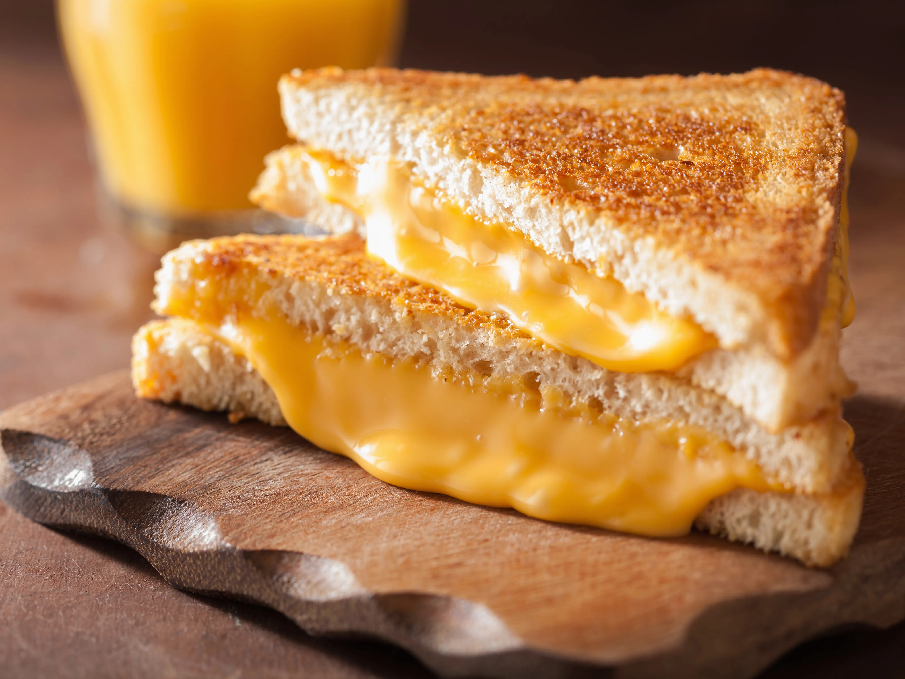

Grilled Cheese Sandwich

Grilled Cheese final product
A grilled cheese sandwich is a classic and simple comfort food that consists of melted
cheese between two slices of bread, which are toasted or grilled to a golden-brown perfection.
Ingredients
Instructions
- Prepare Ingredients
- Take out the desired number of bread slices.
- Slice the cheese into even layers. You can use one or a combination of cheeses for added flavor.
- Spread Butter
- Spread a thin layer of butter on one side of each bread slice. This will be the outer side that gets grilled.
- Assemble the Sandwich
- Place the cheese evenly on the non-buttered side of one bread slice.
- Grill the Sandwich
- Place the assembled sandwich on the heated surface. Grill each side for 3-4 minutes or until golden brown and the
cheese is melted.